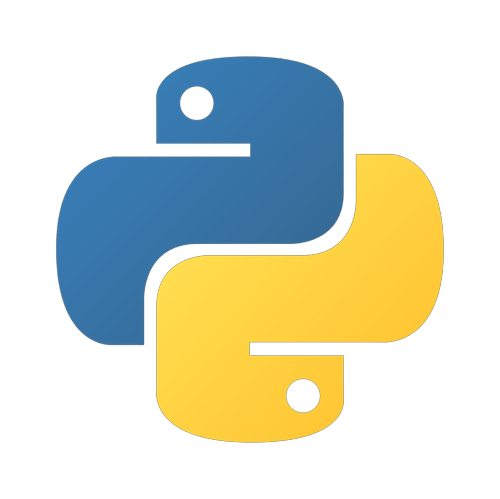
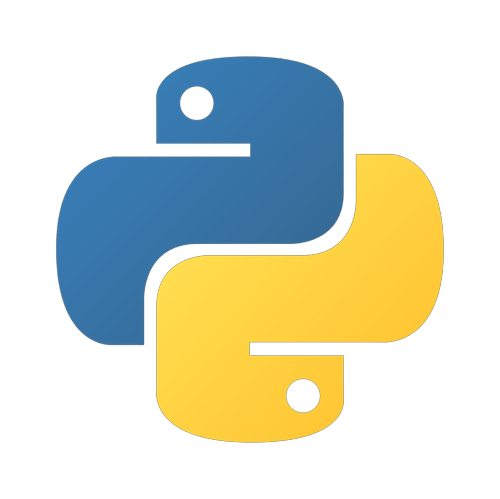

Basicamente trata-se de automações que fiz e que melhoraram a dinâmica do meio trabalhista no meu estágio. Consegui fazer automações de login em proxy e login em sistemas próprios do INSS. Diversas pessoas gostaram, assim resultando no uso contínuo. Fiz as automações usando as Libs Selenium e PyAutoGUI.

 
